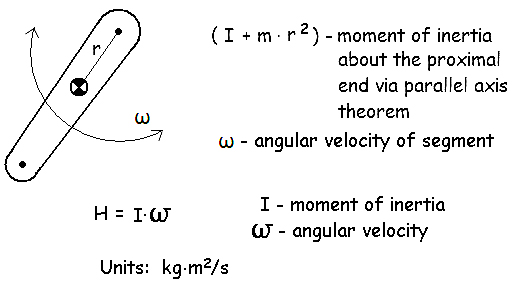
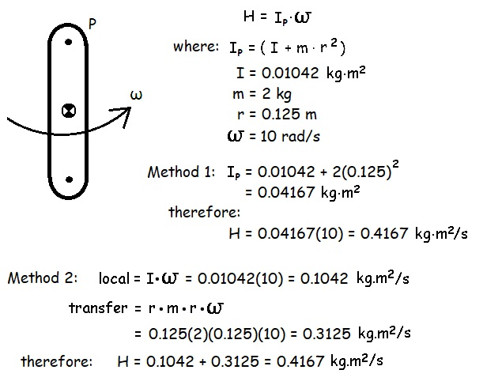
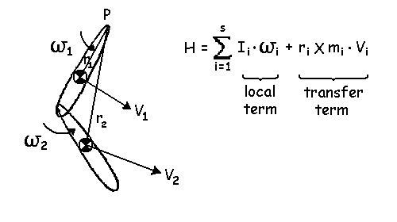
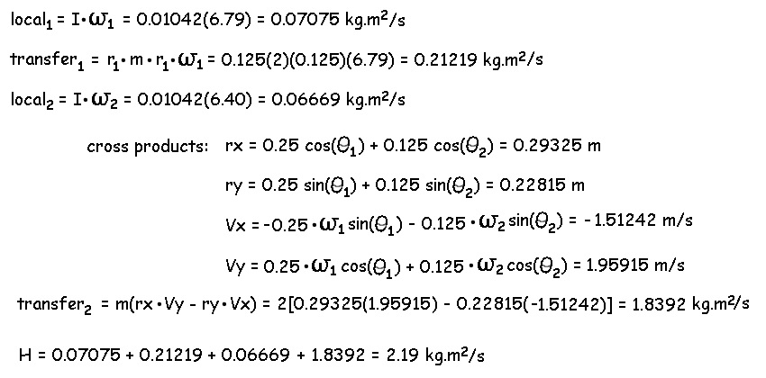
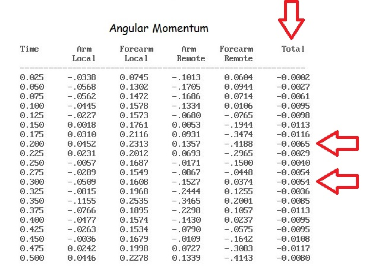
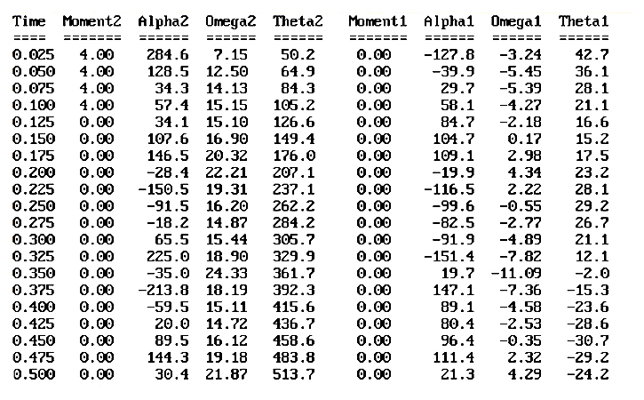
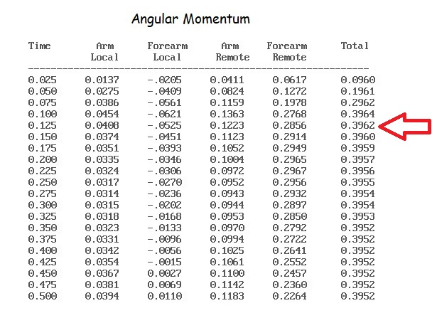

Angular Momentum of a Linked Segment System
Angular momentum was introduced in a previous lecture (Impulse-Momentum). Angular momentum about a given axis is calculated as the product of moment of inertia and the angular velocity of the segment. It is not so simple in a system of rigid links because the links can move somewhat independently of each other. The angular momentum about a certain axis is the sum of each segment's angular momentum about that axis. The calculation of each segment's angular momentum consists of the angular momentum about its CofG (local term) and a remote term (often called the transfer term) that relates the segment's angular momentum about the axis of interest.

The diagram to the right shows a single segment in which the angular momentum about the proximal end can be calculated as the product of the moment of inertia about the proximal end and the segment angular velocity.
Another way to calculate the angular momentum would be to take the product of the moment of inertia about the CofG with segment angular velocity plus the product of mass with the cross product of linear velocity and the position vector from axis to CofG. In the case of a single segment, the second method is not required but in multi-segment systems, it is essential to calculate the angular momentum of the system about a given axis.

Example of a single segment:
The segment has a mass of 2 kg and the CofG is 0.125 m from the axis at the proximal end. The moment of inertia of the segment about the CofG is 0.01042 kg.m2. Find the angular moment of the segment about the proximal end if the angular velocity is 10 rad/s.
The first method calculates the moment of inertia about the proximal end and then multiplies that moment of inertia times the angular velocity to get the angular momentum about P.
The second method calculates the local term as the moment of inertia about the CofG (0.0104 kg.m2) and multiplies that by the angular velocity of 10 rad/s. It then calculates the remote or transfer term as the mass times the cross product of the radial distance from the axis (r) with the linear velocity of the CofG. In this case, the linear velocity of the CofG is the tangential velocity. The terms are added together to get the angular momentum about P.
Notice that we get the same answer of 0.4167 kg.m2/s with either method. This will always be the case for a single segment but we must use the second method when two or more segments are linked together but can move independently.

The diagram to the left shows a two segment system.
The angular momentum about the proximal end (P) can be calculated by using method 2 (above). That is, taking the total of the local and transfer angular momentum terms of all of the segments in the linked system In this case, S would be 2 because there are two segments in the system.

The example on the right shows the top view of a person swinging their arm horizontally. Both segments have a mass of 2 kg located in the middle of the links which are 0.25 m in length.
The calculation of the angular momentum about the shoulder involves the summation of the local and transfer (remote) terms of the two segments.
The radial distance of segment 1 (r1) is always 0.125 m and the radial distance of segment 2 (r2) from the shoulder depends on the elbow angle. The linear velocity of segment 1 (V1) is the tangential velocity of the CofG of segment 1 and the linear velocity of segment 2 (V2) is the sum of the tangential velocity of the elbow about the shoulder and tangential velocity of the CofG of the forearm about the elbow.
The cross product can be calculated using rectangular components of the radial distance and linear velocity.

The total angular momentum about the shoulder is 2.19 kg.m2/s. Notice that the transfer term of the forearm is the greatest contributor to the angular momentum
In the "Impulse-Momentum" lecture in Biomechanics II, we saw that impulse was equal to a change in momentum. Therefore. angular impulse is equal to a change in angular momentum. Angular impulse is also equal to a moment of force or torque times time.
In order for the two segment system shown above to have 2.19 kg.m2/s of angular impulse, muscles must have generated moments of force for a period of time.
The units for angular impulse are N.m.s and 1 N.m.s = 1 kg.m2/s.
In the previous lecture on forward dynamics, we selected a joint moment of 4.0 N.m about joint 2 (the elbow joint) for 0.1 seconds and then allowed the system to move under its own momentum.


We can see in the table on the left that the joint moment caused accelerations about both joints which, in turn, caused the angular velocities to change. However, the angular momentum about the shoulder is zero. The table on the right shows the local and remote terms of angular momentum about the shoulder. Each segment has angular momentum due to angular velocities that are not zero but the total is always zero (there is a small amount of roundoff error that can be seen in the column on the right).
You can use the data from the table on the left to perform hand calculations like we did above and find the total angular momentum at time 0.2 and at 0.3. You should find that at both times the total angular momentum is zero.

If we perform the same simulation but activated the shoulder flexors and kept the elbow muscles relaxed we would see that angular moment would increase from 0 to 0.1 seconds and then remain constant.
The table on the right shows the angular momentum for the shoulder moment simulation. Notice that the angular momentum increases from zero to about 0.4 kg.m2/s at 0.1 seconds. The total angular momentum then remains 0.4 even though the local and remote terms keep changing.
Conclusion:
Angular momentum may seem to be a fairly simple extension of linear momentum to the rotational world but it can have some fairly complex interactions when several segments are involved. Many activities such as trampoline, tumbling, diving, etc. require the manipulation and generation of angular momentum to achieve the desired result.